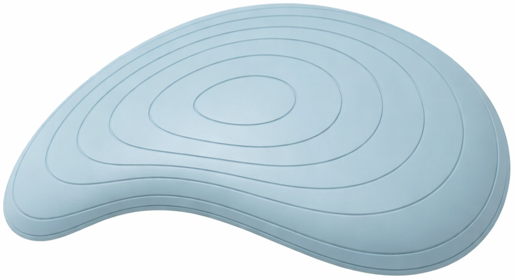
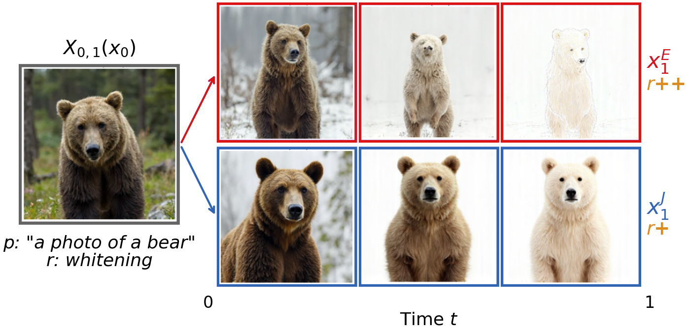
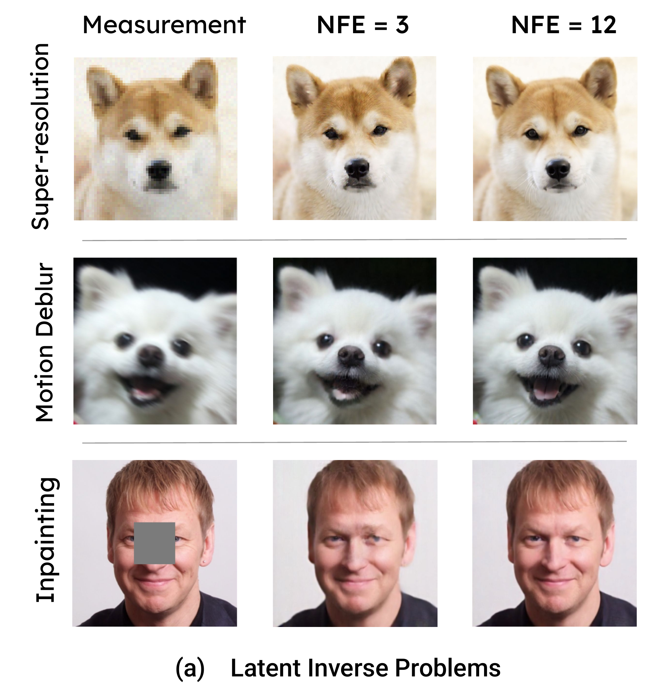
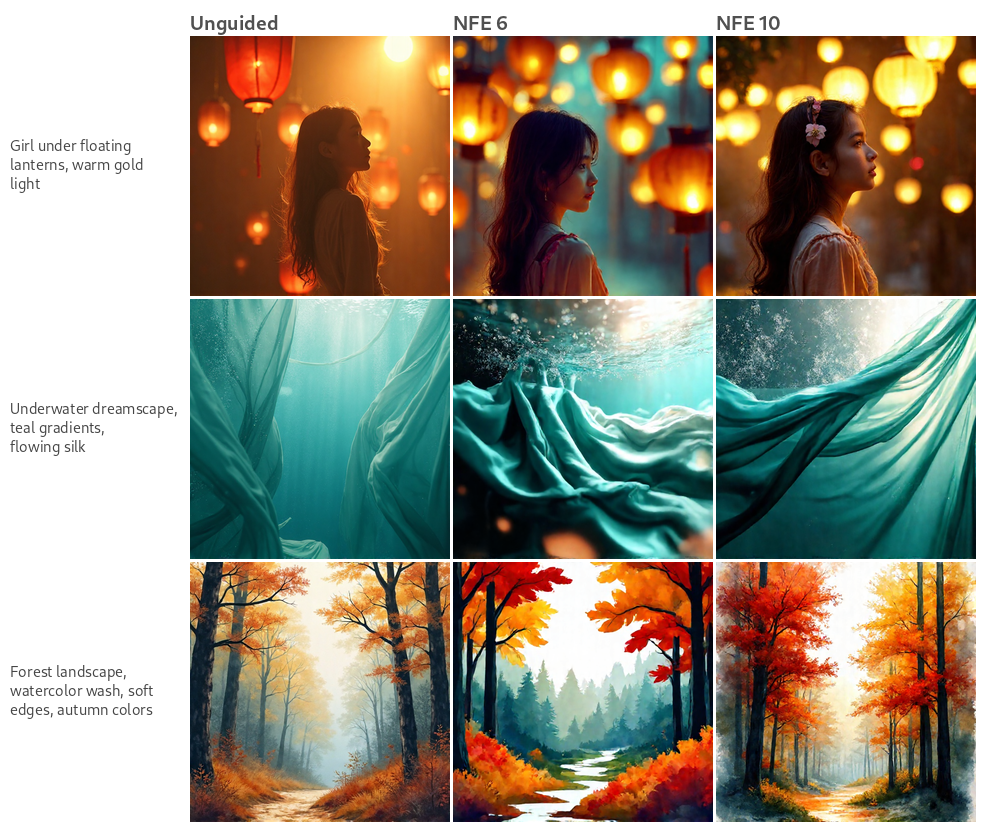
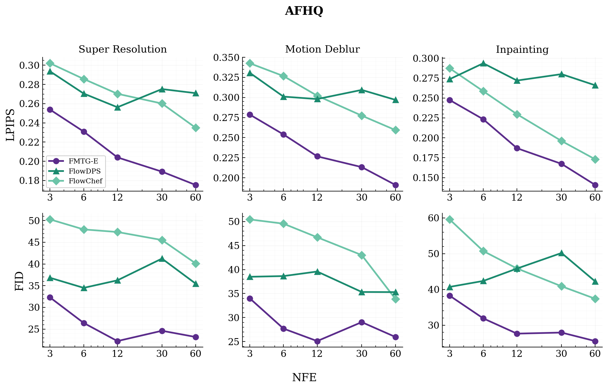
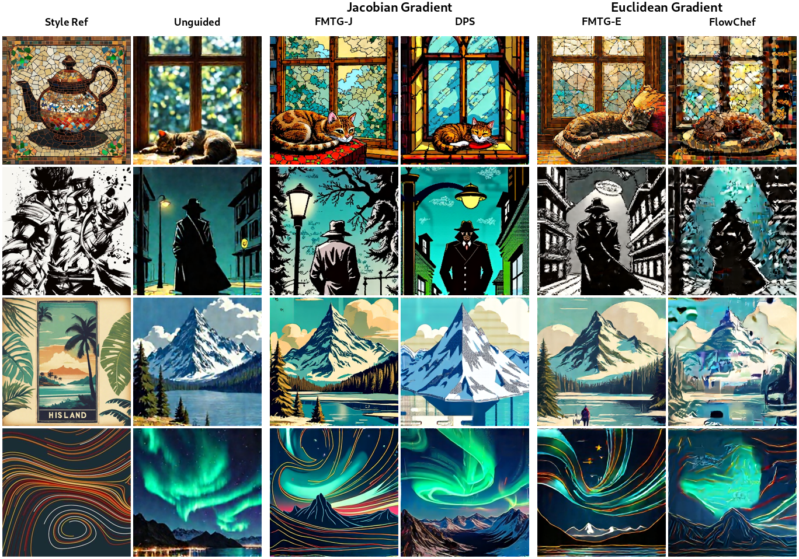
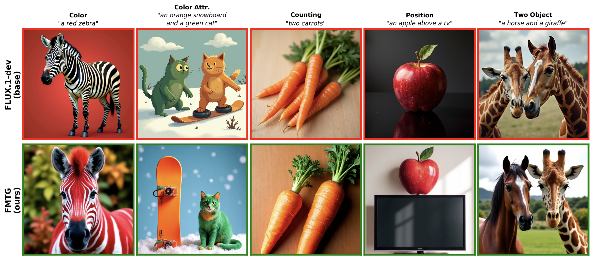
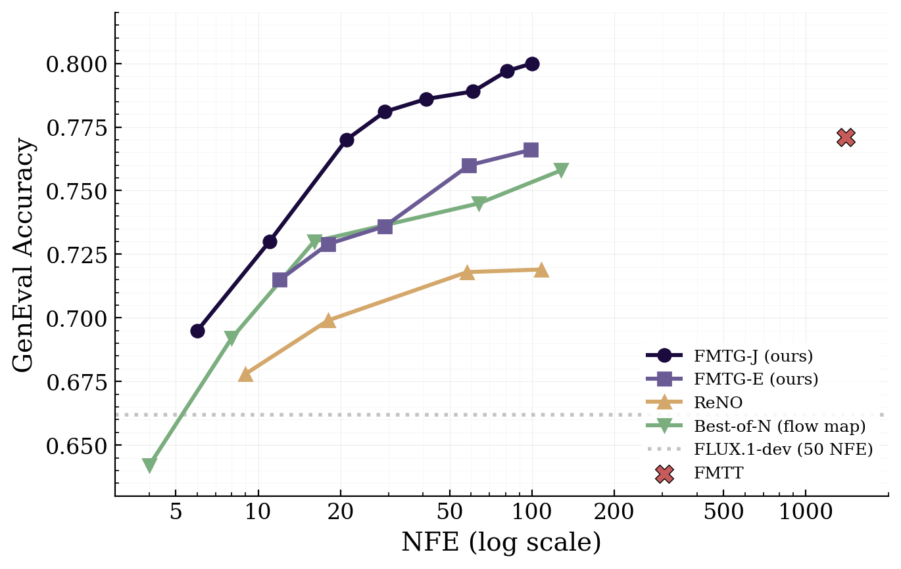
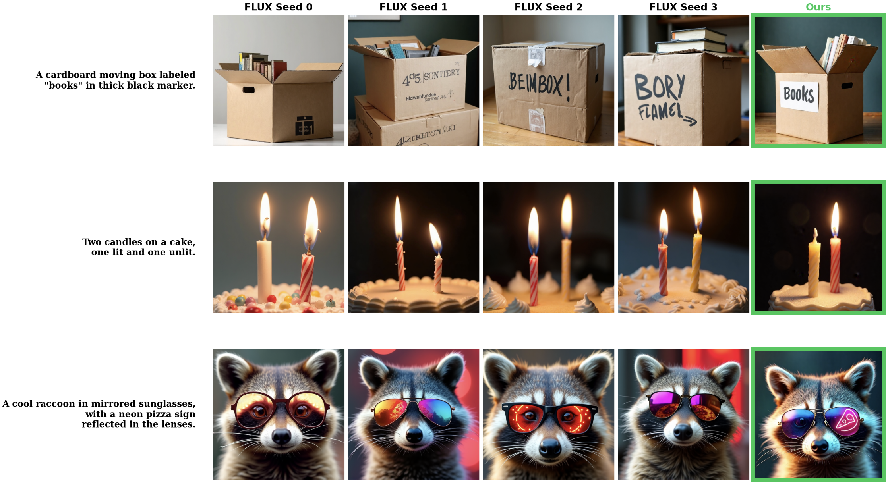
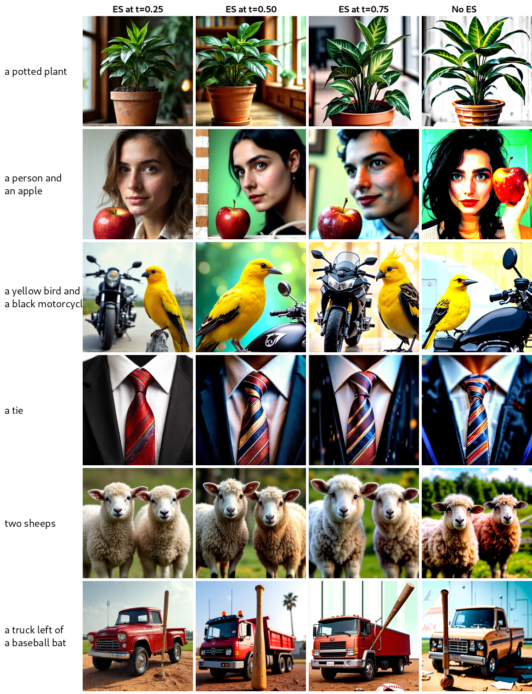

Steering Flow Maps for Rapid Test-Time Alignment
1Carnegie Mellon University · *Equal contribution
In generative modeling, we often wish to produce samples that satisfy a user-specified reward such as measurement consistency, aesthetic quality, or alignment with human intent, a problem known as inference-time guidance. While flow-based models enable high-quality generation, existing guidance methods either require expensive multi-particle, many-step schemes to sample from a reward-tilted distribution or rely on heuristic approximations. To design efficient algorithms, we reformulate guidance as a deterministic optimal control problem. We find that the flow map arises naturally in the optimal solution, and that many existing flow-based guidance methods are best understood as coarse approximations that replace it with a single Euler step. Rather than relying on these approximations, we propose Flow Map Trajectory Guidance (FMTG): a principled framework that uses the flow map to both integrate and guide flow, enabling training-free alignment in just a few network evaluations. We demonstrate FMTG at text-to-image scale using a FLUX.1-distilled flow map, showing that it matches or surpasses baselines across inverse problems and reward-guided image generation with up to 10× and 70× fewer function evaluations, respectively.
FMTG formulates inference-time guidance as deterministic optimal control. Instead of approximating sampling from a reward-tilted distribution, we directly optimize a trajectory to maximize reward while staying close to the learned generative process. The key insight is that the flow map—the solution operator of the probability flow—naturally appears in the optimal guidance signal.
Our theoretical analysis reveals that existing guidance methods form a hierarchy, with FMTG's greedy guidance occupying a principled middle ground between exact optimal control and heuristic single-step methods like DPS.

Tangent space projection. The flow map Jacobian projects reward gradients onto the data manifold's tangent space, keeping the trajectory on-manifold (FMTG-J). The Euclidean gradient may leave the manifold (FMTG-E).

Qualitative comparison. FMTG-E achieves higher raw reward (r++) but produces off-manifold artifacts, while FMTG-J stays on-manifold with natural image quality (r+).
We evaluate FMTG on reward functions of varying complexity: L2 reconstruction losses for linear inverse problems, VGG-based style losses, neural-network human preference rewards, and vision-language model rewards for text-to-image generation.
FMTG solves latent inverse problems at remarkably low NFEs and steers generation toward higher aesthetic quality with increasing NFE, producing visually compelling results at NFE 6 and 10.

(a) Latent inverse problems. FMTG reconstructs super-resolution (4×), motion deblur, and box inpainting from degraded measurements at NFE 3 and 12.

(b) Human preference reward guidance. FMTG steers generation toward higher aesthetic quality with increasing NFE, producing visually compelling results at NFE 6 and 10.
| Super-Resolution | Motion Deblur | Inpainting | |||||||
|---|---|---|---|---|---|---|---|---|---|
| Method | PSNR↑ | LPIPS↓ | FID↓ | PSNR↑ | LPIPS↓ | FID↓ | PSNR↑ | LPIPS↓ | FID↓ |
| AFHQ-Dog | |||||||||
| DPS | 18.06 | .503 | 59.99 | 16.68 | .547 | 58.59 | 17.15 | .540 | 95.30 |
| FlowChef | 26.87 | .243 | 43.29 | 26.75 | .250 | 38.58 | 24.12 | .160 | 35.10 |
| FlowDPS | 27.02 | .250 | 34.58 | 26.07 | .279 | 36.77 | 26.11 | .239 | 44.10 |
| FMTG-E (ours) | 27.12 | .180 | 25.48 | 27.26 | .177 | 23.12 | 26.12 | .126 | 24.73 |
| FMTG-J (ours) | 27.39 | .193 | 29.51 | 27.36 | .204 | 24.43 | 26.71 | .158 | 31.20 |
| FFHQ | |||||||||
| DPS | 18.74 | .530 | 119.30 | 20.20 | .483 | 127.91 | 18.93 | .486 | 137.36 |
| FlowChef | 26.71 | .237 | 117.04 | 24.53 | .296 | 109.30 | 25.41 | .164 | 76.52 |
| FlowDPS | 27.70 | .205 | 61.85 | 26.85 | .233 | 64.55 | 27.90 | .195 | 73.30 |
| FMTG-E (ours) | 27.53 | .171 | 62.63 | 28.10 | .153 | 38.52 | 28.66 | .103 | 35.15 |
| FMTG-J (ours) | 28.23 | .154 | 55.99 | 28.62 | .155 | 41.33 | 29.48 | .112 | 43.99 |

LPIPS vs. FID trade-off on AFHQ. FMTG-E achieves notably better performance on distortion and perception metrics in the low NFE regime, matching or outperforming baselines using 2–10× more NFEs.
FMTG steers generation toward a target visual style while preserving semantic content, using the Frobenius norm between Gram matrices of VGG features as a style reward. The Jacobian gradient (FMTG-J) captures the target style most faithfully while preserving semantic content.

Style guidance: hierarchy of methods. Given a style reference (left), we compare unguided FLUX, Jacobian-based methods (FMTG-J, DPS), and Euclidean-based methods (FMTG-E, FlowChef). FMTG-J captures the target style most faithfully while preserving semantic content.
Using a linear combination of human preference reward models (ImageReward, HPSv2, PickScore, CLIP), FMTG achieves a GenEval score of 0.80 at NFE 100—matching the state of the art with a 70× reduction in NFEs.

GenEval qualitative results. FLUX.1-dev (top) vs. FMTG (bottom). FMTG corrects color attribution, missing objects, and spatial relationship errors.

GenEval Pareto frontier. FMTG-J achieves 0.80 GenEval at NFE 100, matching FMTT (NFE 1400) and outperforming ReNO (NFE 58) and Best-of-N (NFE 400).
| Method | NFE ↓ | GenEval ↑ |
|---|---|---|
| FLUX.1-dev (unguided) | 50 | 0.662 |
| Best-of-N (reward-selected) | 400 | 0.751 |
| ReNO (seed optimization) | 58 | 0.716 |
| FMTT | 1400 | 0.771 |
| FMTG-E (ours) | 30 | 0.751 |
| FMTG-E (ours) | 60 | 0.766 |
| FMTG-J (ours) | 20 | 0.770 |
| FMTG-J (ours) | 100 | 0.800 |
Beyond standard rewards, FMTG leverages complex vision-language model (VLM) rewards to steer generation toward detailed, compositional prompts that base models struggle with.

VLM reward guidance. Unguided FLUX generations across four seeds (left) fail to capture fine-grained details in complex compositional prompts. FMTG (right, green border) steers generation toward prompt-faithful outputs using a VLM-based reward.
Early stopping—applying guidance only for t ∈ [0, tstop] then running the uncontrolled flow to completion—is a key design choice. It controls mode collapse and recovers the polynomial variance scaling of exact optimal control or reward tilting.

Effect of early stopping. Progressive effect of early stopping on guided generation. Without early stopping, aggressive guidance can lead to mode collapse; with it, FMTG produces diverse, high-quality outputs.
| Reward | Model Size | Best Variant |
|---|---|---|
| L2 reconstruction | — | FMTG-E |
| VGG Gram style | 144M | Comparable |
| Reward ensemble | 3.4B | FMTG-J |
| Skywork VLM | 7B | FMTG-J |
If you find this work useful, please cite our paper:
@inproceedings{huang2026how,
title={How to Guide Your Flow: Steering Flow Maps for Rapid Test-Time Alignment},
author={Huang, Jerry and Lin, Justin and Shah, Sheel and Nair, Kartik and Boffi, Nicholas M.},
booktitle={Proceedings of the 43rd International Conference on Machine Learning},
year={2026},
series={PMLR},
volume={306}
}